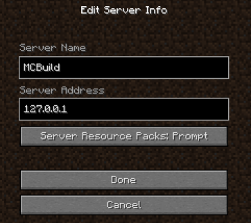

Currently 64-bit Linux and Windows are supported. Windows version uses Cygwin to simulate a POSIX-compatible environment and uses exactly the same source code and compiled the same way as the Linux version.
32-bit platforms should work as well, but that wasn't tested for a long time, so I cannot confirm that. Other architectures (e.g. ARM on Raspberry Pie) should also work, but that wasn't tested - feel free to try.
What about OSX? Good question. OSX is UNIX-based and all the necessary tools and libraries are available - it should just work if you install GCC and other tools, essentialy following the Linux installation instructions. Unfortunately I have no experience with OSX and no possibility to test it. If someone's willing to volunteer to test the installation procedure and create an installation guide, I would gladly add it to the documentation.
MCBuild is written completely in C, so it's very fast and lightweight. You should be able to run it even on low-end hardware.
Building it involves only a few standard tools and libraries, which are easy set up on any Linux distribution or in Cygwin. I am also providing a prebuilt package for Windows, which is probably the most convenient choice for most users.
Follow one of the three sections below that suits you best.
Download the package from the link provided on the forums and unpack it to your C:\ drive. At the end, you should have a C:\cygwin64 directory with a bunch of other files and directories in it.
In the C:\cygwin64 directory, launch the cygwin.bat file. On the first launch you will see a bunch of files being copied - this is your home directory being set up. After that, you will get a shell prompt.
Now you can proceed with the section Configuring Your Minecraft Client.
Download and launch the Cygwin 64-bit installer.. During installation wizard, make sure to select a mirror location close to you. Leave other settings as they are.
When you reach the package manager screen, select following additional packages to be installed:
The simplest way to locate them, is to type the name of the package (e.g. "libcurl-devel" into the search bar, then select the package under correct folder. Note that there are packages with similar names located in the same or different folders - make sure to select the right one!
To select a package for install, click on the "Skip" next to its name - it should then change to the version number Cygwin is going to install.
After you selected all the packages, confirm everything and let it install. In case you missed something, you can always launch the installer again - it will recognize the current installation and what packets were already installed.
Now you can launch the shell in C:\cygwin64\cygwin.bat or from the shortcut installed on your desktop.
Now you should have all necessary tools and libraries, but you still need to install MCBuild. You can proceed with the manual MCBuild installation, which is essentially identical on Windows and Linux.
You need to install following tools and libraries. The exact names of the packages and how do you install them may differ from distro to distro, but all of them should be available on any decent Linux distro. Refer to your package manager.
For the libraries, make sure to install a package containing the files necessary for the development, i.e. header files etc. Typically these packages are are identified by -devel suffix. I.e. on Ubuntu you would typically have libpng package already installed, but you need libpng-devel in order to compile MCBuild.
At this point, you should have all the prerequisities installed and the procedure will be identical for Windows or Linux installation from scratch. We assume that MCBuild and libhelper (a library used by it) will be installed into your home directory.
Clone and compile libhelper and MCBuild sources:
cd
git clone https://github.com/broese/libhelper.git
cd libhelper
make
cd
git clone https://github.com/broese/mcbuild.git
cd mcbuild
make
make install
If everything went fine, you should now have mcproxy application in that directory (mcproxy.exe on Cygwin) - the actual proxy/client and a couple of other auxiliary applications like mcpdump which we will describe later. Now MCBuild should be ready to use. Proceed with the next section to configure your Minecraft client.
For your convenience, I've provided a bunch of scripts to assist you with the setup. You can execute them at the shell prompt (Linux or Cygwin). Before continuing, you should make sure that MCBuild is updated to the newest version:
mcb_update
If you happen to have installed Minecraft just now, and have never ran it before (on this user account), please launch it, login into your account and into some server at least once before proceeding. This is necessary so your Minecraft directory (%APPDATA%/.minecraft on Windows or ~/.minecraft on Linux) is set up.
Before MCBuild can be used with your client, we need to patch a few things in your Minecraft directory, so your client will be able to connect through MCBuild. Specifically, we need to redirect the three-way authentication process when you're joining a server through MCBuild.
mcb_install
After running mcb_install, your Minecraft directory is patched for use with MCBuild. This needs to be done only once before using MCBuild for the first time, or after restoring your Minecraft directory to original state. It won't do any harm to run it when your Minecraft is already patched however.
This patch affects a library in your Minecraft directory and not the actual client, so mcb_install is typically not required again if your client gets an update, or if you install any mods or a custom client.
Note that once your Minecraft directory is patched, you will be only able to connect through MCBuild! If you want to use your Minecraft client without MCBuild, you need to remove the patch first:
mcb_remove
Finally, you need to add a new entry to your multiplayer server list, through which you will be accessing MCBuild. Use address 127.0.0.1
Now you are ready to launch MCBuild.
You can launch MCBuild from the shell prompt, using
mcb_start
When launched without parameters, MCBuild will connect to 2b2t.org. To connect to any other server, write the address as a parameter:
mcb_start mc.example.com
mcb_start mc.example.com:12345
Now you should be able to connect to your server through MCBuild, by accessing the server list entry we defined before.
If everything goes well and you're logged in, you can do a quick test to verify MCBuild really works by typing in chat:
#test
You should see a response from MCBuild. Voila! You're ready to go!
For the further instructions, refer to the documentation located in the docs folder. If you're using Windows version, it should be located at c:\cygwin64\home\YOURNAME\mcbuild\docs\index.html and on Linux ~/mcbuild/docs/index.html